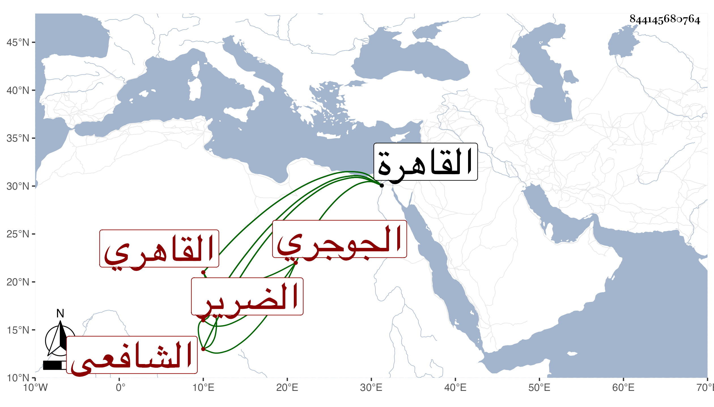

0902Sakhawi.DawLamic.ITO20230111-ara1.EIS1600.844145680764
Biography ID: 844145680764
396
محمد بن أبي بكر بن حسن بن علي بن أحمد بن خلف الشمس الجوجري ثم القاهري الشافعي الضرير ويعرف بابن دشيشة . ولد سنة عشر وثمانمائة تقريبا بجرجر من أعمال القاهرة وقرأ بها القرآن والتبريزي وبعض المنهاج الفرعي وجميع العمدة والملحة وبحث الملحة علي الشمس الحريري والعز بن جميل بالتصغير قاضي بلده ، ثم رحل إلى القاهرة في سنة ثلاث وثلاثين فحضر دروس الفقه والنحو عند جماعة ومدح شيخنا بما أثبته في الجواهر ، وكتب عنه البقاعي وقال أنه نزيل خط بركة قرموط ذكي يسترزق بتأديب الأطفال بل ولقيته كثيرا عند الجمال الكرماني وسمعت من نظمه جملة بل سمع ختم البخاري بالظاهرية وكان غاية في الذكاء . مات في العشر الأخير من شعبان سنة سبع وسبعين .
